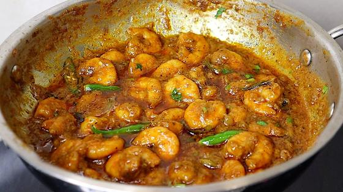

📍 San Jose: 67° / 49°F, Overcast
⏱ ~40 min reading
100 items
|
The Morning Brief
Executive Personal Intelligence Briefing
|
Friday, October 23, 2026
Sunrise 07:27 · Sunset 18:14 · AQI 36 · Moon: Full moon, 97% lit
|
|
Executive Synthesis: Automated prompt optimization and agent trace isolation lead today's issue, alongside Indian market cross-currents, Amaravati infrastructure backing, festive Tollywood releases, and an Andhra autumn keto menu.
Keto Kitchen
Daily Keto Protocol (Net Carbs: 19.8g / 25g)
| Net Carbs |
Protein |
Healthy Fats |
Total Calories |
| 19.8g |
91g |
44g |
853 kcal |
breakfast
Andhra · Heat 4/5 · 18m
The everyday Andhra spinach and egg fry, built the way home cooks do it: a cumin-garlic ghee base, dry-fried spinach so nothing turns watery, then eggs set on top and broken into the greens. Garlicky, peppery and properly hot, ready in 18 minutes.
5.4g net carbs ·
16g protein ·
17g fat ·
247 kcal ·
Serves 2
● Fat 65%
● Protein 26%
● Net Carbs 9%
Palak Egg Bhurji Recipe !! — Vismai Food
Ingredients
-
spinach leaves, washed, stems removed, finely chopped
about 3 packed cups · 150g
-
eggs
4 large · 200g
-
ghee
1 tbsp · 14g
-
cumin seeds
3/4 tsp · 1.5g
-
curry leaves
1 sprig · 2g
-
garlic, crushed
2 small cloves · 5g
-
onion, very finely chopped
2 tbsp · 30g
-
green chillies, slit
2 chillies · 8g
-
turmeric
1/2 tsp · 1g
-
Guntur red chilli powder
1.5 tsp · 3g
-
coriander (dhaniya) powder
3/4 tsp · 1.5g
-
garam masala
1/2 tsp · 1g
-
black pepper, freshly ground
1/4 tsp · 0.5g
-
salt, added at the end
1/2 tsp · 3g
Method
- Prep (7 min): wash the spinach, drain it well and pat it dry with a towel; chop finely. Wet spinach is what makes this dish soggy and eggy-smelling, so take the extra minute.
- Heat the ghee in a wide kadai over medium heat. Add the cumin and let it sizzle for 10 seconds, then the curry leaves; when they stop spluttering add the garlic and green chillies and fry 20 seconds until the garlic is pale gold, not brown.
- Add the onion and fry 2 to 3 minutes until translucent with a few golden edges. Stir in the turmeric, chilli powder and coriander powder and cook 15 seconds only, so the karam does not burn.
- Add the spinach and toss on medium-high heat for 3 to 4 minutes, uncovered, until it wilts and the water has cooked off and the oil starts to show at the edges.
- Push the spinach to the sides, lower the heat, and crack the eggs into the gaps (or break them in and lightly break the yolks). Cover and cook on low for 2 minutes without stirring, until the whites are set.
- Flip the set pieces with a spatula, cover 1 more minute, then break everything up and fold it together for 1 to 2 minutes until the eggs are fully cooked and the mix is moist but not wet.
- Turn off the heat, then add the salt, garam masala and pepper and mix gently. Rest 1 minute and eat hot.
Make it taste like home
- Salt goes in after the eggs are done: early salt pulls water from the spinach and the eggs turn rubbery and smell eggy.
- Keto tip: the carbs here are almost all from the onion and spinach (about 5 g net per serving), so keep the onion to 2 tablespoons; garlic and chillies give the punch instead.
- Heat: drop to 1 green chilli and 2 g (1 tsp) chilli powder for heat 2; add extra pepper for heat 5.
- Make-ahead: wilt and dry-fry the spinach masala the night before; reheat in the pan and add the eggs fresh.
Keto Swaps & Variations
- Replace ghee with groundnut oil for a more traditional flavour.
- Use mustard seeds in the tempering (1/2 tsp) if you like the classic Andhra talimpu.
lunch
Andhra · Heat 4/5 · 22m
Plump prawns tossed over caramelised onions, curry leaves and green chilli with garam masala and a squeeze of lemon. A 22-minute coastal Andhra classic, dry enough to eat with a spoon or over cauliflower rice.
6.5g net carbs ·
37g protein ·
10g fat ·
265 kcal ·
Serves 2
● Fat 34%
● Protein 56%
● Net Carbs 10%
Andhra Style Prawns Masala !! — Vismai Food
Ingredients
-
prawns, peeled and deveined (thawed and patted dry if frozen)
about 12 oz, 20 to 24 medium · 350g
-
lemon juice, for the marinade and finish
2 tsp · 10g
-
ginger, crushed (half for the marinade, half for the pan)
2 cm piece · 6g
-
garlic, crushed (same split as the ginger)
3 cloves · 8g
-
Guntur red chilli powder
1 3/4 tsp · 3.5g
-
turmeric
1/2 tsp · 1g
-
salt
3/4 tsp · 3.5g
-
ghee
2 tsp · 10g
-
sesame (gingelly) oil
1/2 tbsp · 7g
-
cumin seeds
1/2 tsp · 1g
-
curry leaves
2 sprigs · 3g
-
green chillies, slit
2 chillies · 8g
-
onion, finely chopped
1/2 medium onion · 70g
-
coriander (dhaniya) powder
1 tsp · 2g
-
garam masala
1 tsp · 2g
-
coriander leaves, chopped
1 tbsp · 5g
Method
- Prep (8 min): pat the prawns completely dry, then toss with half the crushed ginger-garlic, 1 tsp of the chilli powder, the turmeric, half the salt and 1 tsp of the lemon juice. Leave them on the counter while you chop and start the pan; do not marinate longer than 10 minutes.
- Heat the ghee and oil in a wide pan over medium-high heat. Add the cumin, curry leaves and green chillies and cook 20 to 30 seconds until the curry leaves stop spluttering and turn crisp.
- Add the onion with a pinch of salt and fry about 5 minutes, stirring, until deep golden brown at the edges. Add the rest of the ginger-garlic and stir 30 seconds so it does not burn.
- Raise the heat to high, add the prawns in a single layer and cook 2 minutes, turning once, just until they start to turn pink.
- Add the remaining chilli powder, the coriander powder and the garam masala, stir to coat 30 seconds, then sprinkle over 3 tbsp water, cover and cook on medium 3 minutes. The prawns are done when they curl into a loose C; a tight O means overcooked.
- Uncover and cook on high 1 to 2 minutes, tossing, until the water has evaporated and the masala clings to the prawns. Finish with the remaining lemon juice and the coriander. Serve straight away.
Make it taste like home
- Taste tip: the iguru gets its depth from properly browned onion; resist adding tomato or coconut, which would make it a different dish and add carbs.
- Keto tip: 70 g of onion across two servings keeps each portion to about 6.5 g net carbs. Use lemon, not tamarind, for sourness.
- Prawns that sit in the pan after cooking turn rubbery, so serve immediately. Frozen shrimp from US stores (peeled, deveined, tail-off) work well; thaw in the fridge overnight and pat dry.
- Heat dial: for heat 3, use 1 tsp chilli powder and one green chilli.
Keto Swaps & Variations
- Large shrimp work as well; cook an extra minute.
- Add 100 g chopped gongura at step 5 for a sour royyala gongura.
dinner
Andhra · Heat 4/5 · 28m
Tangy red sorrel leaves wilted into spiced goat mince until the oil separates: the gongura mamsam flavour in a fraction of the time, with the leaves doing the work that tamarind or tomato would.
7.9g net carbs ·
39g protein ·
16g fat ·
342 kcal ·
Serves 2
● Fat 44%
● Protein 47%
● Net Carbs 10%
Gongura Keema Recipe | గోంగూర కీమా రెసిపీ| Sorrel Leaves Keema Recipe | — My Cooking Diary
Ingredients
-
ground goat (mutton keema), ground twice
about 12 oz · 350g
-
ghee
1 tbsp · 14g
-
sesame (gingelly) oil
1/2 tbsp · 7g
-
cumin seeds
3/4 tsp · 1.5g
-
dried red chillies
2 chillies · 2g
-
curry leaves
2 sprigs · 3g
-
onion, chopped very fine
3 tbsp · 40g
-
ginger, minced
2 cm piece · 8g
-
garlic, minced
3 cloves · 8g
-
green chillies, slit
2 chillies · 10g
-
Guntur red chilli powder
2 tsp · 4g
-
turmeric
1/2 tsp · 1g
-
coriander (dhaniya) powder
1 1/2 tsp · 3g
-
salt
3/4 tsp · 4g
-
gongura (sorrel) leaves, stems removed, washed and chopped; thawed if frozen
about 2 cups packed · 100g
-
garam masala
1 tsp · 2g
Method
- Prep (8 min): pick the gongura leaves off the stems, wash and chop them roughly, then spin or pat them dry so they do not add extra water. Chop the onion very fine, mince the ginger and garlic and slit the chillies. Drain the mince if it looks wet.
- Heat the ghee and sesame oil in a wide kadai over medium-high heat. Add the cumin, dried chillies and curry leaves for 15 seconds, until the curry leaves stop spluttering.
- Add the onion with a pinch of salt and fry about 4 minutes until golden brown. Add the ginger, garlic and green chillies and fry 1 minute.
- Turn the heat to high, add the goat keema and fry, breaking it up, 4 minutes until there is no pink left. Add the chilli powder, turmeric, coriander powder and the remaining salt and stir 1 minute.
- Add the gongura, mix well and cook 2 minutes until it collapses into a dark green paste, then pour in 60 ml (4 tbsp) water, cover and cook on medium-low 7 minutes until the mince is tender and the leaves have melted into the masala.
- Uncover and fry on medium-high 3 minutes, stirring often, until the water is gone and oil glistens around the edges. Stir in the garam masala, rest 2 minutes and serve with cauliflower rice or an omelette.
Make it taste like home
- Sourness: gongura is naturally sour, so no tomato or tamarind is needed. If your batch is mild, add 1 tsp lemon juice at the end (about 0.3 g net carbs).
- Where to buy: Indian grocers sell fresh gongura bunches in summer and frozen chopped gongura year-round, and US online Indian grocers list fresh bunches too. Thaw frozen leaves and squeeze out the water before using.
- Keto tip: 100 g of gongura adds about 4 g net carbs for the whole pot (Indian Food Composition Tables value for green leaves), so this lands at about 8 g net carbs per serving; skip store-bought gongura pickle here, since commercial pickles are very salty and oily.
- Heat dial: for heat 3, halve the chilli powder and use only one green chilli.
Keto Swaps & Variations
- Use fresh spinach plus 2 tsp lemon juice if you cannot find gongura (a flavour compromise, not authentic).
- Replace the goat with ground lamb.
side
Andhra · Heat 3/5 · 20m
The keto stand-in for annam: cauliflower grains wrung dry, then tossed through a sizzling ghee talimpu of mustard, curry leaves, garlic and chilli and lifted with lemon. It smells like lemon rice and soaks up pulusu and kura just as happily.
5.5g net carbs ·
3g protein ·
8g fat ·
105 kcal ·
Serves 3
● Fat 66%
● Protein 13%
● Net Carbs 22%
లంచ్ బాక్స్ లకి సూపర్ ఈజీ కాలీఫ్లవర్ రైస్ | Cauliflower Cocount Rice | Lunch Box Recipes — Vismai Food
Ingredients
-
cauliflower florets (about 1 small head)
about 4 cups of florets · 400g
-
ghee
1½ tbsp · 20g
-
mustard seeds
1 tsp · 2g
-
dried red chillies, snipped
2 whole · 3g
-
green chillies, slit
1 to 2 · 10g
-
garlic, crushed
2 cloves · 4g
-
curry leaves
about 20 leaves · 4g
-
turmeric powder
¼ tsp · 1g
-
lemon juice
2 tsp · 12g
-
salt
¾ tsp · 3g
Method
- Pulse the florets in a food processor in short bursts, 6 to 8 times, until the pieces look like rice grains. Stop before they turn to paste. With no processor, grate the florets on the coarse side of a box grater.
- Tip the grains into a clean thin kitchen towel, twist it shut and squeeze hard over the sink until almost no water comes out. Fluff the dry grains with a fork. This step is what stops the dish steaming into porridge.
- Heat the ghee in a wide kadai on medium-high until it shimmers. Add the mustard seeds and wait about 20 seconds for them to crackle, then drop the heat to medium.
- Add the red chillies, curry leaves, garlic and green chillies. Stand back, because the leaves spit. Fry 30 to 40 seconds until the curry leaves stop spluttering and look crisp and glassy and the garlic turns pale gold.
- Stir in the turmeric and salt for 5 seconds, then tip in the cauliflower. Raise the heat to high and toss for 4 to 5 minutes, uncovered, until the grains turn from chalky white to slightly translucent with a few golden specks but still have a bite.
- Switch off the heat, add the lemon juice, toss and taste for salt. Rest 2 minutes with the lid off so the steam escapes, then serve hot.
Make it taste like home
- The talimpu does the talking: get the ghee properly hot so the mustard crackles and the curry leaves go crisp, then add the lemon only off the heat so it stays bright.
- Keto note: one serving is about 130 g of raw cauliflower. The classic lemon-rice tempering of urad dal, chana dal, peanuts or cashews is left out on purpose; for crunch use 1 tbsp toasted sesame seeds instead (roughly 1 g net carb).
- Make ahead: cooked cauliflower rice keeps about 4 days in the fridge and freezes well. Reheat in a hot dry skillet for 2 to 3 minutes rather than the microwave so it stays fluffy.
- Serve under any pulusu, gongura mamsam or egg curry, with a spoonful of kobbari karam and a teaspoon of ghee on top.
Keto Swaps & Variations
- Lower heat: skip the green chilli and use 1 dried red chilli.
- Frozen riced cauliflower works: thaw it fully and squeeze it very dry before it goes in the pan.
- Dairy-free: use sesame oil instead of ghee.
Keto science and tips
 Electrolyte Homeostasis in Ketogenic Diets: Sodium, Potassium, and Magnesium Dynamics
Electrolyte Homeostasis in Ketogenic Diets: Sodium, Potassium, and Magnesium Dynamics
—
A clinical review detailing how insulin reduction during nutritional ketosis increases renal sodium excretion. The authors emphasize that inadequate sodium intake (under 3,000 to 5,000 mg/day) triggers secondary potassium wasting and fatigue, emphasizing the necessity of dietary salt and mineral replenishment.
Takeaway: Directly supports your strict keto regimen, explaining why sodium and electrolytes prevent adaptation fatigue.
 Fat Quality in Low-Carb Nutrition: Evaluating Ghee, Sesame Oil, and Lipid Profiles
Fat Quality in Low-Carb Nutrition: Evaluating Ghee, Sesame Oil, and Lipid Profiles
—
Examines traditional Indian culinary fats in low-carbohydrate contexts. Demonstrates that grass-fed ghee provides butyrate for colon epithelial integrity, while cold-pressed sesame (gingelly) oil supplies lignans (sesamol and sesamin) that mitigate lipid peroxidation during high-heat frying.
Takeaway: Validates the fat sources in your Andhra keto cooking (ghee and cold-pressed sesame oil) for lipid health.
Protein Satiety and Gluconeogenesis: Demand-Driven Glucose Regulation
—
Dispels the myth that higher protein intakes disrupt ketosis through runaway gluconeogenesis. Demonstrates that hepatic gluconeogenesis is an insulin- and glucagon-regulated, demand-driven process rather than a supply-driven one, confirming that robust protein portions (90g+/day) preserve lean muscle while maintaining ketosis.
Takeaway: Reassures that substantial protein portions in your Andhra meals (prawns, eggs, mutton) remain fully keto-compatible.
Watch
Prawns Iguru / Royyala Iguru Andhra Style Preparation
—
Demonstrates the authentic coastal Andhra method for royyala iguru: cleaning prawns, blooming whole spices and curry leaves in oil, caramelizing thinly sliced onions without burning, and reducing the masala until the gravy clings tightly to the seafood.
Takeaway: Matches today's Keto Kitchen lunch recipe (Royyala Iguru), showing exact pan technique and timing.

Spicy Prawn Masala Curry and Andhra Dry Fry Technique
—
A detailed demonstration of balancing fiery Guntur chilli powder with crushed garlic, coriander, and fresh curry leaves. Shows how to prevent prawns from turning rubbery by searing them quickly over high heat and allowing the dry masala to coat evenly.
Takeaway: Visual reference for controlling heat and moisture in Andhra seafood vepudu while keeping carbs minimal.